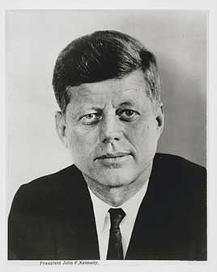

The youngest person elected president. His 1,036 days in office included the failed Bay of Pigs invasion, the Cuban Missile Crisis, the start of the race to the moon and a growing U.S. role in Vietnam. He was assassinated in Dallas on November 22, 1963.
Shaded areas show the years in office, with a few years before and after for comparison. Budget years run October to September, so a new president's first budget year starts the fall after they take office.
June 30, 1960 (end of fiscal 1960): $286.33 billion → June 30, 1963 (end of fiscal 1963): $305.86 billion
Daily debt figures don't exist before 1993, so Kennedy's numbers use the fiscal years closest to his term.
Debt as a share of GDP. Above 100% means the debt is bigger than a year of everything the country produces.
Money borrowed each budget year (below the line) or paid down (above).
Jan 1961: 6.6% → Nov 1963: 5.7% (monthly). Chart shows yearly averages.
How much prices rose each year (consumer price index).
What everyday prices and paychecks did while in office.
Prices use the consumer price index (MeasuringWorth). The minimum wage is the federal rate set by Congress.
214 orders, numbered 10914–11127.
Source: National Archives: Kennedy executive orders (full list of every order).
Set up the Peace Corps; Congress made it permanent later that year.
Federal RegisterThe first federal order to use the phrase 'affirmative action', requiring contractors not to discriminate by race, creed, color or national origin.
Federal RegisterCreated a commission, chaired by Eleanor Roosevelt, whose report led to equal pay laws.
Federal RegisterGave federal employees the right to join unions and bargain collectively.
Federal RegisterBanned discrimination in federally funded housing.
Federal RegisterA routine order on issuing silver-backed currency, later the subject of false conspiracy theories about his assassination.
Federal RegisterA pardon wipes out the punishment for a federal crime; a commutation shortens a sentence but leaves the conviction. Counts are by federal fiscal year. Fiscal 1964 covers July to November 1963.
Source: U.S. Dept. of Justice, clemency statistics, which lists every recipient with the crime and sentence.
The crime: Violating the Neutrality Act by smuggling weapons to Israel (pleaded guilty 1950)
Sentence: $10,000 fine
Why it drew attention: A Las Vegas newspaper publisher; the pardon restored his civil rights.
SourceThe crime: Membership in the Communist Party under the Smith Act (convicted 1954; upheld by the Supreme Court 1961)
Sentence: Six years; 15 months served
Why it drew attention: Civil liberties groups and others argued he was jailed for his beliefs; he had already left the party.
SourceThe same checklist for every president. Tap a row for details and sources.
No articles of impeachment were voted on.
Never charged.
No member of his administration was convicted.
None were appointed.
Attorney General Robert Kennedy approved FBI wiretaps on Martin Luther King Jr. in 1963. The IRS ran a program encouraging audits of right-wing political groups. Both were documented by later congressional investigations.
SourceWhat happened, what was proven, and how it ended.
A CIA-trained force of Cuban exiles invaded Cuba and was defeated within three days.
Outcome: Kennedy took public responsibility; more than 100 invaders were killed and about 1,200 captured.
SourceThe CIA, working partly with Mafia figures, plotted to assassinate Cuba's leader under 'Operation Mongoose'.
Outcome: Revealed by the Church Committee in 1975; whether Kennedy personally approved the plots was never established.
SourceThe Justice Department authorized FBI wiretaps on King, which the FBI then used to try to discredit him.
Outcome: Documented by the Church Committee in 1976.
SourceKennedy had an affair with Judith Campbell Exner, who was also involved with Chicago mob leader Sam Giancana.
Outcome: Documented by the Church Committee; FBI Director Hoover warned Kennedy in 1962.
SourceKennedy concealed Addison's disease and serious back problems treated with heavy medication, while presenting an image of vigor.
Outcome: Confirmed when his medical records were opened in 2002.
SourceWidely quoted remarks, with the context they were said in.
Ask not what your country can do for you, ask what you can do for your country.
We choose to go to the Moon in this decade and do the other things, not because they are easy, but because they are hard.
Ich bin ein Berliner.